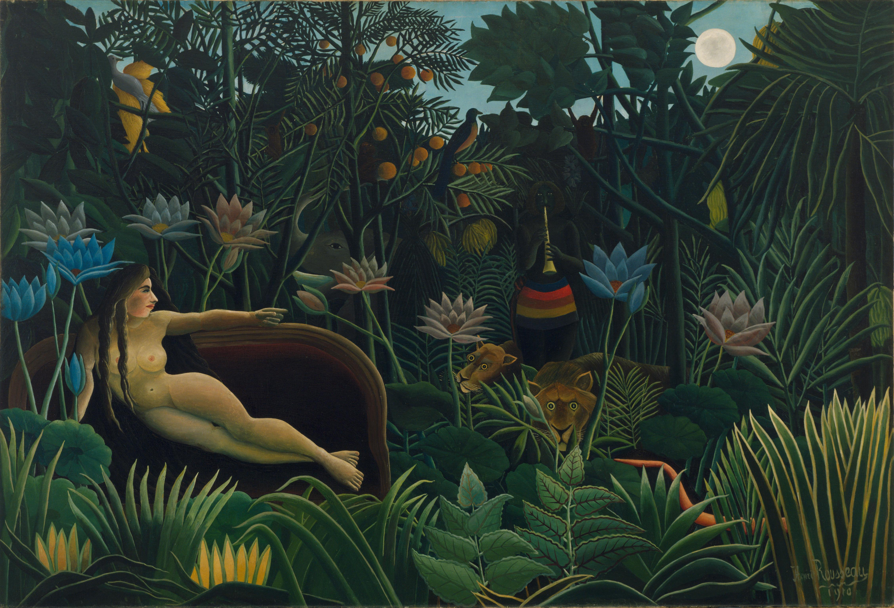
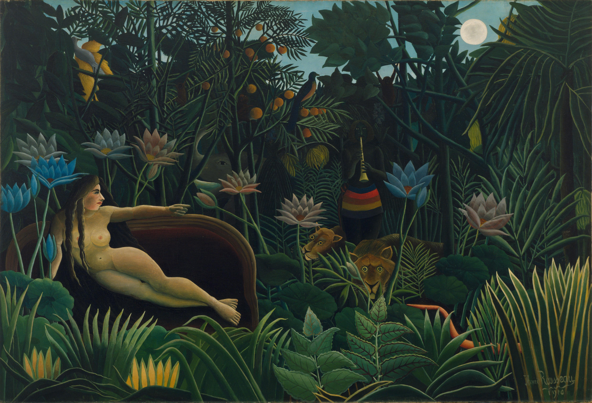
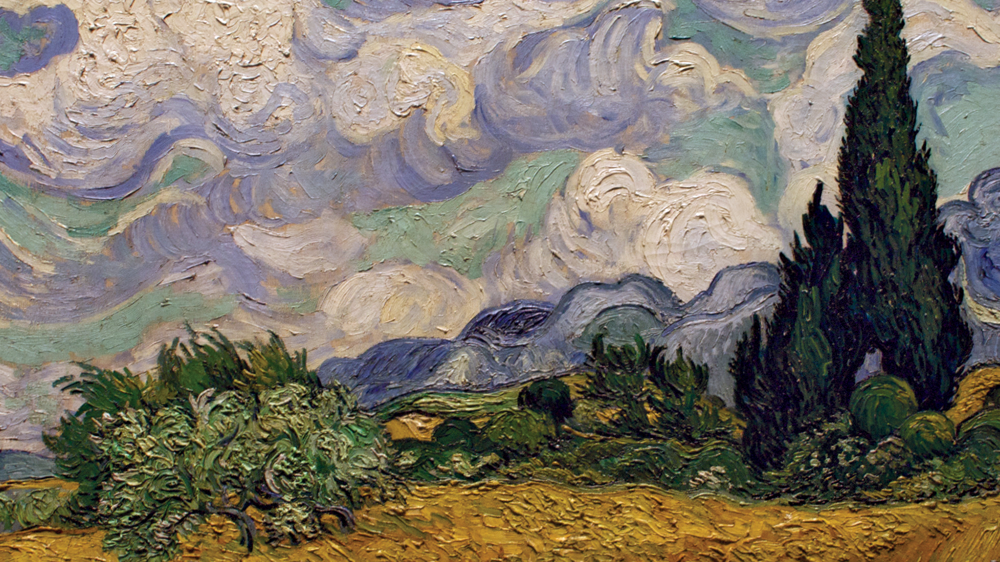

ARTEM
Exploring the Vision and Diverse Styles of Post-Impressionism Pioneers
 View of eight of The Met's paintings by Vincent van Gogh
View of eight of The Met's paintings by Vincent van Gogh
 Van Gogh, Starry Night exhibition in the Atelier des Lumières
Van Gogh, Starry Night exhibition in the Atelier des Lumières
 "A Sunday on La Grande Jatte", Georges Seurat
"A Sunday on La Grande Jatte", Georges Seurat
What is Post-Impressionism?
Post-Impressionism is an art movement that developed in the 1890s. It is characterized by a subjective approach to painting, as artists opted to evoke emotion rather than realism in their work. Post-Impressionism is a term used to describe the reaction in the 1880s against Impressionism. It was led by Paul Cézanne, Paul Gauguin, Vincent van Gogh and Georges Seurat. The Post-Impressionists rejected Impressionism’s concern with the spontaneous and naturalistic rendering of light and color. Instead they favored an emphasis on more symbolic content, formal order and structure. Similar to the Impressionists, however, they stressed the artificiality of the picture. The Post-Impressionists also believed that color could be independent from form and composition as an emotional and aesthetic bearer of meaning.
 


- Starry Night Over the Rhône, Vincent Van Gogh, Oil on canvas, 72 x 92 cm, September 1888, Musée d'Orsay, Paris
- The Dream, Henri Rousseau, Oil on canvas, 2.04 m x 2.98 m, 1910, The Museum of Modern Art
- Wheat Field with Cypresses, Vincent Van Gogh, Oil on canvas, 73 x 93 cm, July 1889, Metropolitan Museum of Art (since 1993)
Defining Characteristics
Evocative Color
“Color! What a deep and mysterious language, the language of dreams.” - Paul Gauguin
Unlike the Impressionists who strived to capture natural light’s affect on tonality, Post-Impressionists purposely employed an artificial color palette as a way to portray their emotion-drive perceptions of the world around them. Saturated hues, multicolored shadows, and rich ranges of color are evident in most Post-Impressionist paintings, proving the artists’ innovative and imaginative approach to representation.
Distinctive Brushstrokes
Van Gogh was known for his thick application of paint on canvas, called impasto. An Italian word for 'paste' or 'mixture', impasto is used to describe a painting technique where paint (usually oil) is laid on so thickly that the texture of brush strokes or palette knife are clearly visible.
In addition to adding texture and a sense of depth to a work of art, these marks also point to the painterly qualities of the piece, making it clear that it is not intended to be a realistic representation of its subject.
If you want to learn Vincent van Gogh's painting technique, check the video below:
In addition to adding texture and a sense of depth to a work of art, these marks also point to the painterly qualities of the piece, making it clear that it is not intended to be a realistic representation of its subject.
If you want to learn Vincent van Gogh's painting technique, check the video below: